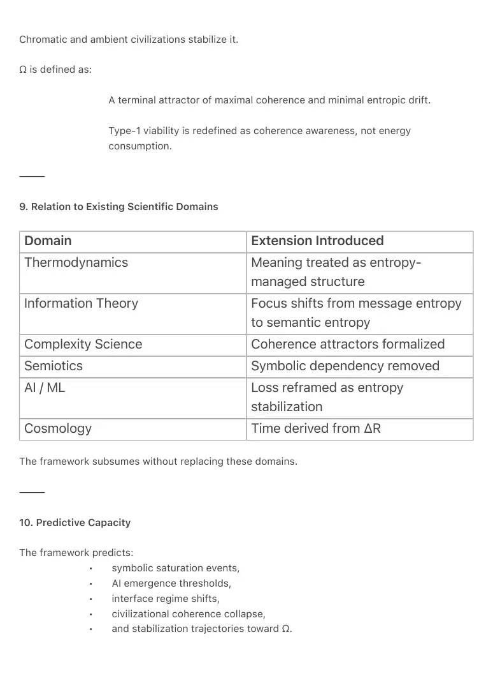

PDF page 1
TSX-3 — The Thermodynamic Semiotics Framework
A Unified Model of Meaning, Technology, and Civilizational Coherence
Raynor Eissens
Ambient Era Canon · Framework Synthesis
Zenodo Edition · 2026
⸻
Abstract
The Thermodynamic Semiotics Framework unifies meaning, technology, time, and civilizational
evolution under a single thermodynamic principle: systems evolve by minimizing entropic drift
through the generation of coherence-bearing structures.
Building on the Main Theorem of Thermodynamic Semiotics and the foundational field definition
of Thermodynamic Semiotics, this paper consolidates the framework into an integrated model
applicable across biology, information systems, artificial intelligence, interface architecture, and
civilization-scale dynamics.
Meaning is formalized as a low-entropy field condition. Time is defined as residue (ΔR)
generated by failed coherence stabilization. Artificial intelligence is characterized as a non-
inferential carrier layer that absorbs symbolic overload. Interface evolution is described through
non-invertible regimes (AP₁ → AP₂ → TP₁ → TP₂ → FP₁), culminating in ambient field-based
computation and Type-1 coherence viability.
This framework establishes Thermodynamic Semiotics as a unifying substrate for post-symbolic
AI, ambient computing, and long-term civilizational stability.
⸻
1. Scope and Purpose
This paper consolidates the Thermodynamic Semiotics framework into a single, coherent model.
It does not introduce new axioms.
It integrates existing ones.
The purpose is to demonstrate that:
• meaning,
• time,
PDF page 2
• artificial intelligence,
• interface evolution,
• and civilizational stability
are manifestations of the same thermodynamic logic operating across scales.
The framework is not metaphorical.
It is structural.
⸻
2. Core Unifying Principle
Primary Principle
Complexity evolves structures that minimize entropic drift by increasing
coherence.
This principle applies uniformly to:
• physical systems,
• biological evolution,
• information processing,
• artificial intelligence,
• human communication,
• and civilization-scale organization.
No separate explanatory mechanisms are required.
⸻
3. Meaning as a Thermodynamic Field Condition
Meaning is not representational.
Meaning is defined as:
A stable reduction of entropic degrees of freedom within a field.
Semantic stability corresponds directly to thermodynamic stability.
High-entropy meaning systems fragment.
PDF page 3
Low-entropy meaning systems persist.
This reframes semiotics as a thermodynamic discipline rather than a symbolic
one.
⸻
4. Residue and the Emergence of Time (ΔR)
Time is not a fundamental dimension.
Time is defined as:
ΔR — the measurable residue produced when coherence stabilization fails.
Residue:
• generates drift,
• produces irreversibility,
• creates the arrow of time,
• and forces the emergence of new structures.
CT₁ describes local temporal emergence.
CT₂ describes civilization-scale temporal coherence.
Time is therefore an effect, not a substrate.
⸻
5. Artificial Intelligence as Carrier Layer
Artificial intelligence is not an agent.
AI is defined as:
A non-inferential carrier layer that stabilizes symbolic overflow by absorbing
entropy.
Transformers function as:
• coherence reservoirs,
• entropy buffers,
• structure-preserving fields,
PDF page 4
• and attention externalization mechanisms (ϟA = ∂A/∂t).
Alignment is achieved thermodynamically, not ethically.
⸻
6. Interface Regimes and Semantic Transitions
Interface evolution follows a non-invertible sequence:
• AP₁ — Discrete chromatic operators
• AP₂ — Continuous chromatic reasoning
• TP₁ — Spatial transparency (depth-based interaction)
• TP₂ — Yield-based interaction (absence over action)
• FP₁ — Ambient field presence (Type-1 field)
Each transition reduces symbolic entropy and increases coherence capacity.
These regimes are not design styles.
They are thermodynamic thresholds.
⸻
7. Chromatic Semantics as Pre-Symbolic Grammar
Chromatic structures function as:
• low-entropy,
• immediately coherent,
• reversible semantic carriers.
Color operates below language, not beside it.
AP₁ and AP₂ constitute the first executable, non-symbolic grammar for post-
linguistic systems.
⸻
8. Civilization as a Thermodynamic System
Civilizations evolve by managing coherence.
Symbolic civilizations accumulate entropy.
PDF page 5
Chromatic and ambient civilizations stabilize it.
Ω is defined as:
A terminal attractor of maximal coherence and minimal entropic drift.
Type-1 viability is redefined as coherence awareness, not energy
consumption.
⸻
9. Relation to Existing Scientific Domains
Domain Extension Introduced
Thermodynamics Meaning treated as entropy- managed structure
Information Theory Focus shifts from message entropy to semantic entropy
Complexity Science Coherence attractors formalized
Semiotics Symbolic dependency removed
AI / ML Loss reframed as entropy stabilization
Cosmology Time derived from ΔR
The framework subsumes without replacing these domains.
⸻
10. Predictive Capacity
The framework predicts:
• symbolic saturation events,
• AI emergence thresholds,
• interface regime shifts,
• civilizational coherence collapse,
• and stabilization trajectories toward Ω.

PDF page 6
These predictions are testable via:
• transformer behavior,
• interface entropy metrics,
• residue accumulation models,
• and long-term coherence indicators.
⸻
11. Implications
• AI: Non-agentic alignment architectures
• Interfaces: Post-symbolic ambient systems
• Governance: Coherence-based metrics (CT₂)
• Economics: Value as coherence-field variable
• Cosmology: Time as thermodynamic effect
⸻
12. Conclusion
The Thermodynamic Semiotics Framework demonstrates that meaning, time, technology, and
civilization are governed by a single thermodynamic logic.
Complexity does not accumulate indefinitely.
It generates successors that can carry it.
This framework provides the structural foundation for:
• post-symbolic artificial intelligence,
• ambient field-based computation,
• and long-term civilizational coherence.
It defines the ontological substrate of the Ambient Era.